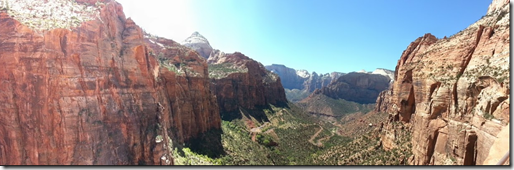
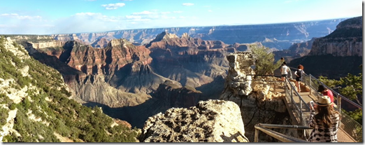
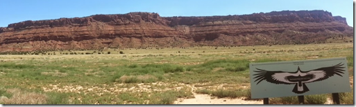
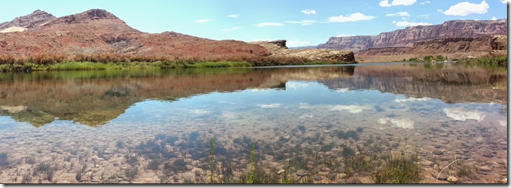
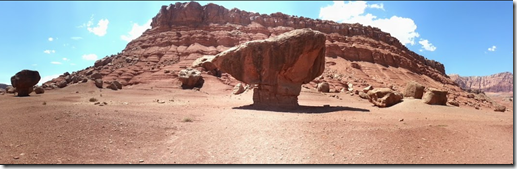
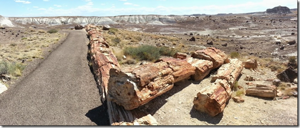
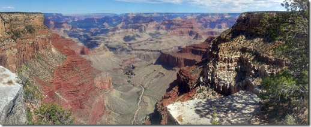
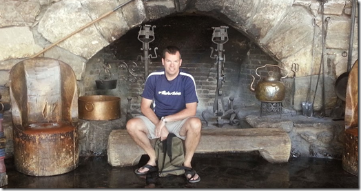

A National Park
In August of 2014, we took a road trip to get a taste of the National Parks in and around Utah and Arizona. The purpose was to scout out where we would want to return and spend more time on a future trip.
Flew into LAS on Alaska Airlines flight 616, Tuesday night. Stayed at the newly remodeled Tropicana. Nice rooms and really friendly hotel staff.
We hotfooted it out of Vegas and had lunch in Springdale, UT, just outside of Zion NP. A great place called Oscar’s Cafe. Our waitress Rachel, took care of us recommending a couple of menu items, I had the shrimp tacos, while others in our party had an Avocado Chip Burger and a Turkey Bacon Avocado wrap. Next time, I’m ordering the Avocado Chip Burger, it has Fritos on the burger!
Since we would be visiting a bunch of NPs this trip we bought the $80 annual pass, good for all parks for the next year.
Once inside the park we took some time to drive around the park before heading out through the tunnel on the East side. Immediately after exiting the tunnel the is a parking lot that offers access to the canyon overlook trail on the opposite side of the street.
This was a fairly easy hike that rewarded us with great views of Zion’s main canyon. The only challenge was the midday sun, although were had brought plenty of water along.

View from the top of the Canyon Overlook trail into the Zion National Park
It was few hours’ drive from the exit at Zion to our accommodations for the night, and it was pretty uneventful. We managed a stop for pie at the Thunderbird Restaurant, “Home of the Ho-made Pie”. If your hankering for some good pie, move along, don’t bother stopping here.
Our destination was the Quail Park Lodge in Kanab, UT. Originally built in 1963 as a roadside motel, it was recently remodeled in 2011. Billed as “Retro-Cool”, the rooms were nice, clean and comfortable. There seems to be a trend in travel to bill motels (motor hotels) as lodges. The Quail Park Lodge is one of these, while there is no strict definition, I’d consider it a motel. I prefer my rooms to have interior not exterior doors, I worry about an axe murderer coming in the middle of the night. I didn’t say it was logical, but there it is.
We didn’t linger very long after checking in because we had a dinner reservation at the Grand Canyon Lodge on the North Rim at 6:15pm and it was already 5pm with a 2 hour drive ahead of us.
Time in this part of the country can be a bit challenging. Kanab is in the mountain time zone, Arizona doesn’t observe Daylight Savings Time, and the Grand Canyon National Park goes by Mountain Standard Time.
So… when we checked into our room at 5pm, with 2 hour drive ahead of us, to make a 6:15pm reservation we thought we were okay, but we weren’t 100% sure.
The drive to the North Rim proved to be the high point of or trip, literally, we reached an elevation of 8840ft. We pulled into the parking lot about 5:25pm or was it 6:25pm, our phones were no help as they showed 7:25pm.
I was dropped off near the lodge entrance and ran to the restaurant to verify our reservation, preparing to grovel for the next available table if our time gymnastics proved out to be incorrect.
It turns out we were 45 minutes early, YES! With time on our side, we headed out to the back verandah to watch the waning rays of the sun paint the canyon in hues of red, amber, gold and purple.
 View from the North Rim at the Grand Canyon Lodge
Dinner at the lodge was good, but it was the setting that made it fantastic, it reminded me of the time we had dinner at Crater Lake Lodge last summer. [Editor’s Note: The GC and CL lodges are truly lodges in the classical sense, no motel wannabees here]. Our waiter, Scott, an Indiana native, kept us entertained with his stories of his grandfather’s horseradish growing operation, while we played stump the bartender with an order of Greyhounds. After a dessert trio consisting of creme brulée, chocolate fudge brownie, and bread pudding, it was time to head back to the QPL for a good night sleep.
The ride back was made more exciting than the ride in due to the numerous Mule deer sightings along the side of the road, often no more than 6 feet from the median. Luckily no deer in the headlights for us.
After checking out of our room, it was back in the car for another full day of driving. Our destination for the night was Tuba City on the Navajo/Hopi Indian Reservation. The drive would take us along the Vermilion Cliffs , with a stop at the Vermillion Cliffs Condor Viewing Area, to view the local California Condor population. Unfortunately, the best time to view the condors is early spring, so had zero sightings.
 No Condors, but a great view of the Vermillion Cliffs
We stopped at Lee’s Ferry Lodge (another motel) for lunch. The best part of this place was the fact that they had over a 100 beers on the menu. They didn’t have my first choice Fraoch in stock anymore, so I went with the suggested Xingu Black Beer. While the beer was excellent, even that couldn’t save me from thinking that my other choice for lunch, Cliff Dwellers restaurant would have been better.
After lunch, we headed up Lee’s Ferry Road, part of the Glen Canyon National Recreation Area, and leveraged our Annual Park Pass for admission. We stopped at Cathedral Wash, a slot canyon trail, that was semi-passable, but still interesting. Further up the road, we hiked through the historical buildings of Lee’s Ferry and dipped our toes in the calm cool waters of the Colorado River, still crystal clear at this point.

At Lee’s Ferry, the Colorado River is still calm and clear
On the way back, I jumped out at the balanced rocks to get a picture with these amazing geological features.
 On of the amazing balanced rocks along Lee’s Ferry Road in Glen Canyon
Immediately exiting the National Recreation Area, we cross the Colorado River and stop at the Navajo Bridge. While the Navajo Bridge Interpretive center was closed for repairs, we were able to walk out on the bridge and get some great views of where the Colorado starts cutting into the Grand Canyon.
From here, it’s just over an hours’ drive to Tuba City, and the Moenkopi Hotel, a fairly new hotel, with a nice pool for cooling off and washing away the dust from the day’s outings. We had dinner at the Hogan Family restaurant. They served a variety of foods including some Navajo specialties such as Navajo Fry Bread and Mutton Stew. For those with appetites, I would suggest the Navajo Fried Chicken Dinner or the Ribs. For $12 you get 4 pieces of fried chicken, coleslaw, corn on the cob, beans and jalepeno poppers. Pretty amazing. The reviews on Trip Advisor are pretty harsh, but all in all not a bad place to get some food. Incidentally, this is not owned by the Hogan family, as I learned from the nearby Navajo information center, a Hogan is a sacred home for the Navajo people to practice religious ceremonies.
After a good night’s sleep and a hearty breakfast of Moons over My Hammy at the Denny’s adjacent to the hotel, it was off to Petrified Forest National Park. The drive would take us through some of the most desolate land in the middle of nowhere. It prompted me to post as much to my Facebook page. About 15 minutes later, my Sister (who lives in Vegas), commented on my post that they were in the vicinity, traveling to roughly the same destination. We arranged for a meetup in Holbrook, AZ at the Winner’s Circle for an impromptu family reunion. Who would have thought that we would be meeting up with each other hundreds of miles away from where we live. We hugged, chatted and said our goodbyes after 30 minutes, each back to their respective road trips.
Petrified Forest National Park was our third National Park on this trip alone, we stopped at the visitors center, and walked the Crystal Forest trail. The petrified logs were the remains of a tropical forest over 200 million years old, when the current area was located near the equator. Similar to the Ginkgo Petrified Forest in Washington State, this area contained lots of petrified wood and fossils. The park also houses the remains of the Puerco Pueblo settlement from around 1300 AD. One of the more interesting artifacts is a petroglyph that marks the occurrence of the Summer Solstice.
 That’s petrified wood boys and girls
Retracing our steps back through Holbrook, AZ we passed the Wigwam Motel on historic Route 66, eventually ending up at the Doubletree hotel in Flagstaff, 90 minutes later. Moons over My Hammy can only satisfy ones hunger for so long, so we headed down to the Galaxy Diner for some historic Route 66 flair. This is a classic diner in every sense of the word. With so many of my favorites on the menu it was a tough choice, but I ended up ordering the Potsie Pot Roast with a Chocolate Malt, it was not a mistake. If you are ever in Flagstaff, and like the “diner scene”, make sure you stop in at the Galaxy Diner.
The next morning it was up an at’em for a drive to the Grand Canyon South Rim. We would be spending most of the day hiking along the South Rim trail. The park has a great bus system that cuts down on car congestion, this really enhances the feeling of remoteness. We hopped on the bus to be dropped of at “The Abyss” stop, and began our walk West along the rim trail.
 Look ma, no rails to prevent you from going over the edge on the Rim trail
You can get right up to the edge on the Rim trail, there are no railings to prevent you from being stupid. It was good that we started our hike in the morning, the sun was not too hot, and foot traffic along the path was nonexistent. The destination of our three mile hike was [Hermit’s Rest(http://en.wikipedia.org/wiki/Hermit%27s_Rest), it offered a snack bar, water refills and restrooms.
 At the end of the line in Hermit’s Rest
At Hermit’s Rest, we were able to jump back on a bus to take us back to the visitor center. In the afternoon, the parking was full, and we were heading back on the road to return to Vegas. What happens in Vegas stays in Vegas, so I’ll end the tale here. We did end up catching Alaska Airlines flight 617 back to Seattle.
So, where would we go back to? Definitely the Grand Canyon and Zion (particularly in the town of Springdale), all of the other sites are considered complete.